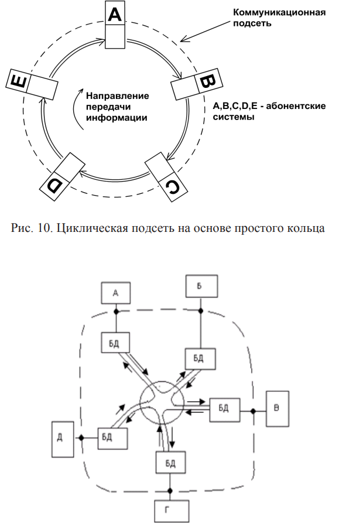
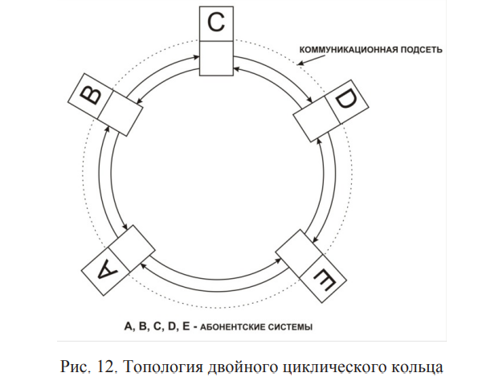

Характерной особенностью циклической подсети является кольцевой канал, в который, разделяя его на сегменты, включены абонентские системы. Простейшая топология циклической подсети, получившая название простого циклического кольца, представлена на рис. 10. Каждый блок данных последовательно, по очереди, доставляется всем абонентским системам. Передача информационных сигналов осуществляется в кольце циклами в одном направлении через все блоки доступа. В каждом из них передаваемый кадр задерживается побитно, для того чтобы соответствующая система могла прочесть адрес кадра, записать его содержимое и сделать отметки в кадре. Существенным недостатком такой топологии является его ненадёжность. Разрыв кольца в любой точке либо авария в любом блоке доступа приводит к прекращению работы всей коммуникационной подсети. Устранить этот недостаток можно путем построения коммуникационной подсети по топологии циклического кольца с центральным коммутатором (рис. 11). В этом случае при обрывах в линиях передачи между центральным коммутатором и абонентской станцией либо при нарушении работы её блока доступа неисправная ветвь кольца центральным коммутатором отключается, и подсеть продолжает работу без неё. «Узким» местом в работе такой сети является сам центральный коммутатор. Но обеспечить надёжную работу одного устройства гораздо легче и дешевле, чем всей коммуникационной подсети.
Устранить этот недостаток удалось путём разработки топологии двойного циклического кольца, представленной на рис. 12. За счёт использования второго кольца удалось увеличить не толь- 12 ко скорость передачи в коммуникационной подсети в два раза за счёт одновременной передачи информации по обоим кольцам в противоположных направлениях, но и «живучесть» подсети за счёт возможности переконфигурирования сети в случае аварий на любом участке или в узле доступа. В этом случае в узлах доступа станций, соседних с аварийным сегментом сети, производится его отключение путём соединения прямого и обратного колец. Двойное кольцо в этом случае превращается в простое циклическое, но коммуникационная подсеть продолжает свою работу уже без аварийного сегмента.
Топология двойного циклического кольца была использована при построении первой высокоскоростной магистральной сети на основе волоконно-оптических линий связи, работавшей со скоростью передачи 125 Мбит/с и получившей название Fiber Distributed Digital interface (FDDI) – оптический цифровой распределённый интерфейс. В коммуникационных подсетях с маршрутизацией информации передача данных осуществляется от одной абонентской системы-отправителя к другой – получателю. Для доставки ин- 13 формации используются узлы коммутации, поэтому сеть называют узловой. В узлах коммутации осуществляется обработка адресов назначения блоков данных, т. е. происходит их маршрутизация – прокладка через коммуникационную подсеть трактов, связывающих абонентские системы. Наиболее типичными примерами таких подсетей являются телефонные сети связи общего пользования и сеть Internet.